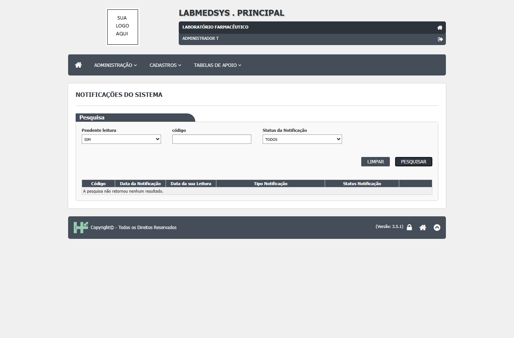
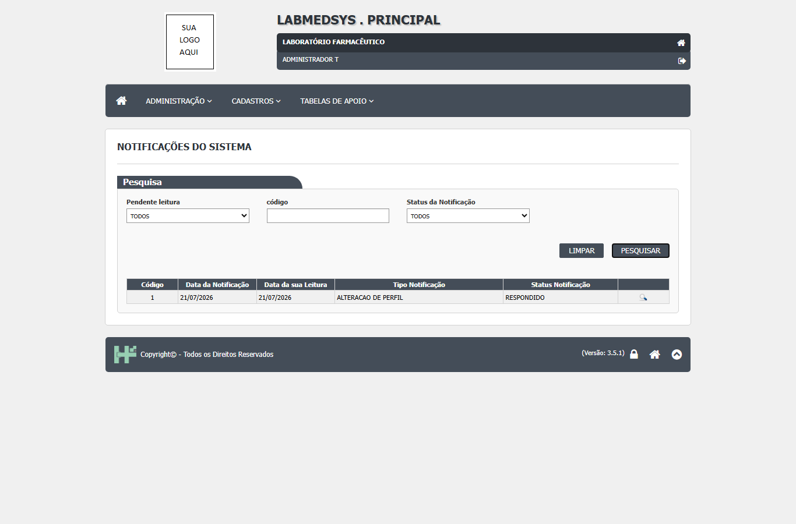
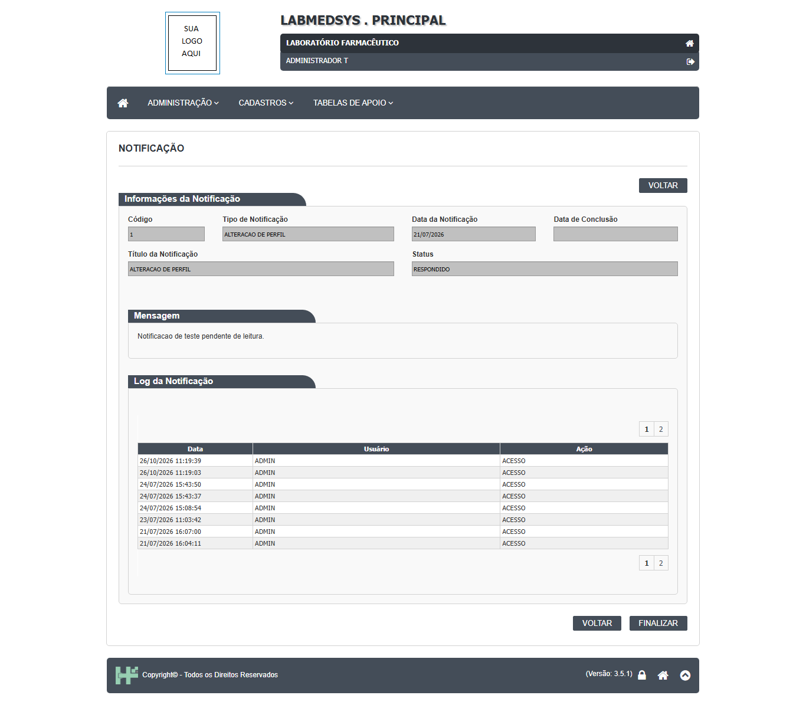
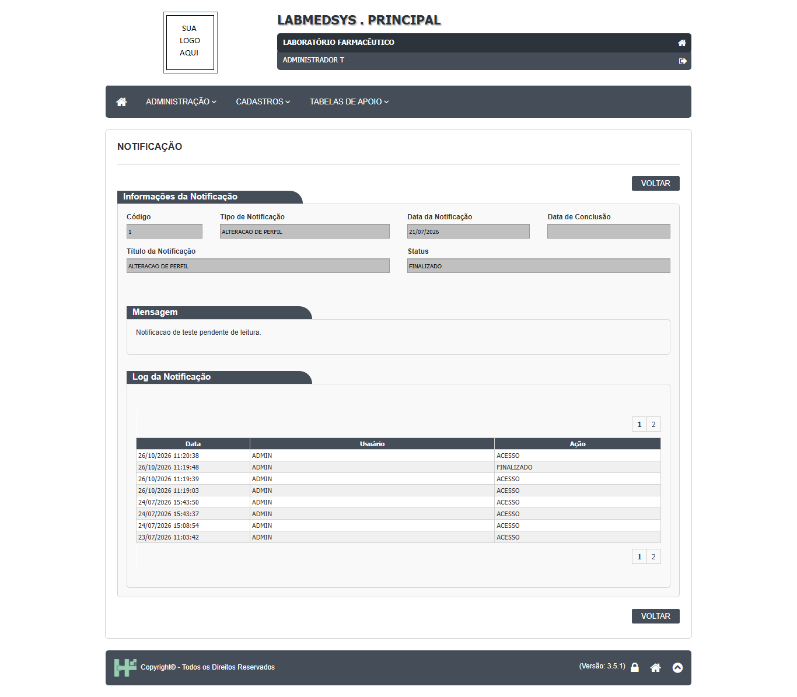

Para que serve
As Notificações do sistema são a caixa de entrada de avisos de cada pessoa. Quando outro módulo precisa chamar alguém para agir (por exemplo, um documento novo que alguém precisa revisar), ele manda um aviso ao Principal, e o aviso aparece aqui para os destinatários. A pessoa abre o aviso, lê a mensagem, pode responder e, depois, finalizar. Qualquer pessoa que seja destinatária de um aviso usa a tela; a lista mostra só os avisos de quem entrou. Hoje, pelo código, quem dispara avisos é o módulo Controle de Documentos, ao criar um documento (ponto para validar com a área se Garantia da Qualidade e Estoque deveriam avisar por aqui).
Quem usa e em que etapa do processo
Quem usa
- Qualquer pessoa que seja destinatária de um aviso. A lista mostra só os avisos do usuário que entrou.
- Na prática, hoje, quem dispara avisos é o módulo Controle de Documentos, ao criar um documento. Os outros módulos não chamam o serviço de avisos no código analisado (busca por
NotificacaoSistemaem todos os módulos). Ponto para validar com a área se os módulos Garantia da Qualidade e Estoque deveriam avisar por aqui. - O contador de avisos não lidos aparece no cabeçalho de todas as telas e leva a esta lista.
- Quem pode abrir, incluir, alterar, excluir, imprimir e ver o histórico está em "Quem pode usar (permissões)", mais abaixo.
Em que etapa do processo entra (tela 10 do menu Administração, módulo Principal)
- Pelo menu, pelo contador do cabeçalho ou pelo botão VOLTAR da tela de detalhe.
- Ao abrir, a lista já vem pesquisada com "Pendente leitura = SIM".
- Para existir aviso, é preciso que o tipo de aviso esteja configurado (evento ativo) e que haja destinatários definidos; sem isso o serviço recusa com "Evento não configurado" ou "Usuário não definido para o evento".
O que acontece depois (para onde o trabalho segue)
- Abrir um aviso já grava coisas, sem o usuário clicar em nada: data de leitura do destinatário, status "Lido" (se estava "Notificado") e uma linha "ACESSO" no registro da notificação.
- RESPONDER grava o status "Respondido", quem respondeu e a data de resposta, e marca o aviso como "atendido" para todos os destinatários. Depois volta à lista.
- FINALIZAR (só aparece com status "Respondido") grava o status "Finalizado" e a data de conclusão do destinatário. Depois volta à lista.
- O próximo passo da corrente é o da área de origem do aviso (no caso do documento, a revisão ou aprovação no Controle de Documentos); esta tela não leva até lá.
Fonte: Resumo da tela e fluxo da tela (leitura do código e dos testes). O que for leitura da área precisa ser validado com a área.
Antes de começar (o que precisa existir)
| Precisa existir | Para quê | Onde se cadastra |
|---|---|---|
| Um tipo de notificação configurado (evento ativo) com destinatários | Sem isso o serviço recusa criar o aviso ("Evento não configurado" ou "Usuário não definido para o evento") | Menu Administração › Configurar notificação e Notificações padrão |
| Um módulo que dispare o aviso | Não há botão para criar um aviso nesta tela | Módulos de origem (hoje, Controle de Documentos) |
| Você ser um dos destinatários | A lista só mostra os avisos de quem entrou | Configuração de destinatários (telas Notificações padrão e Configurar notificação) |
Passo a passo
Situação das imagens (14/11/2026): imagens reaproveitadas dos testes de 26/10/2026 (rodada 3), cada uma conferida contra o texto. Sem imagem: aviso em estado "Notificado" ou "Lido" (linha em vermelho), o botão RESPONDER, as perguntas de confirmação e o aviso "Registro salvo com sucesso!"; no ambiente havia um único aviso, já respondido.
Consultar a lista
- No menu Administração, abra Notificações do sistema. A lista já vem pesquisada com os avisos ainda não lidos ("Pendente leitura = SIM"). Sem avisos pendentes: "A pesquisa não retornou nenhum resultado.".

Figura 1: lista ao abrir: Pendente leitura "SIM", filtro de código e de Status da Notificação, e a frase "A pesquisa não retornou nenhum resultado." sob as colunas Código, Data da Notificação, Data da sua Leitura, Tipo Notificação e Status Notificação.
- Para ver também os que já leu, troque "Pendente leitura" para NÃO ou TODOS e clique em PESQUISAR. Os outros filtros são "código" (só números) e "Status da Notificação" (Cancelado, Finalizado, Notificado, Pendente, Respondido). Linhas em vermelho são avisos "Notificado" ou "Lido", isto é, que ainda esperam resposta.

Figura 2: lista com "Pendente leitura = TODOS": um aviso (código 1, "ALTERACAO DE PERFIL", de 21/07/2026, status RESPONDIDO) com a lupa para abrir.
Ler, responder e finalizar um aviso
- Clique no ícone da linha. Só de abrir, o sistema marca o aviso como lido para você e anota o seu acesso. A tela mostra Código, Tipo de Notificação, Data da Notificação, Data de Conclusão, Título, Status, a Mensagem e, no fim, o "Log da Notificação" (quem abriu, respondeu ou finalizou, com data e hora).

Figura 3: o aviso 1 aberto, com status RESPONDIDO: Data de Conclusão em branco, a Mensagem e o Log da Notificação, com uma linha ACESSO a cada abertura, em duas páginas; no rodapé os botões VOLTAR e FINALIZAR.
- Se o aviso pede resposta, clique em RESPONDER e confirme em "Deseja responder a notificaçãoo?" (o texto do sistema tem um "o" a mais). O código prevê "Registro salvo com sucesso!" e a volta à lista. Sem imagem: não havia aviso pendente no ambiente de teste.
- Quando o status for "Respondido", aparece FINALIZAR. Confirme em "Deseja finalizar a notificação?" para encerrar.

Figura 4: o mesmo aviso depois de FINALIZAR: status FINALIZADO, uma linha "FINALIZADO" no log (usuário ADMIN), Data de Conclusão ainda em branco e o botão FINALIZAR já não aparece.
O que acontece ao confirmar ou salvar
- Abrir um aviso já grava, sem clicar em nada: data de leitura do destinatário, status "Lido" (se estava "Notificado") e uma linha "ACESSO" no log da notificação (gst_notificacao_usuario_ed.aspx.cs:243-256).
- RESPONDER grava o status "Respondido", quem respondeu e a data, e marca o aviso como atendido para todos os destinatários (gst_notificacao_usuario_ed.aspx.cs:66-84). Depois volta à lista.
- FINALIZAR (só com status "Respondido") grava o status "Finalizado" e escreve "FINALIZADO" no log; a Data de Conclusão continua em branco (Figura 4; DV-PRI-039).
- Não há nada a imprimir nem a exportar.
O que o sistema recusa
- "A pesquisa não retornou nenhum resultado." (lista vazia, Figura 1).
- A tela não recusa responder ou finalizar sem texto, motivo, senha ou assinatura: RESPONDER e FINALIZAR são só confirmações, sem campo de texto.
- Aviso aberto com número inválido: o código tem as mensagens "Notificação do usuário não encontrada", "Identificador incorreto" e "Notificação não encontrada na base de dados"; no teste, abrir o endereço da notificação sem número, com
id=abcouid=999999levou de volta à lista, sem erro técnico (CT-PRI-103). - Falhas do serviço ao criar o aviso ("Evento não configurado", "Usuário não definido para o evento", "Tipo Evento inválido") voltam ao módulo de origem, não aparecem aqui.
Quem pode usar (permissões)
- A lista e o detalhe usam o código de função
ADMINISTRACAO/LISTA_NOTIFICACAO(gst_notificacao_usuario_lst.aspx.cs:18; gst_notificacao_usuario_ed.aspx.cs:20). A lista não tem botões de Novo, Excluir, Imprimir ou Log; o ícone de abrir não depende de ação do perfil. - A lista bloqueia quem não tem a função (CT-PRI-069: acesso negado). O detalhe não confere permissão (pelo código; a confirmar; mesma causa do DV-PRI-025, Alta). A lista mostra só os avisos de quem entrou, mas o detalhe lê o aviso pelo número, sem conferir se a pessoa é a destinatária (pelo código; a confirmar).
- Responder e finalizar não conferem se a pessoa é a destinatária nem pedem função própria.
Cuidados e falhas conhecidas
- Cadastrar um profissional não gerou aviso no teste de 26/10/2026: a única notificação do ambiente era antiga (DV-PRI-038). Não conte com este aviso para saber que há login e perfil a configurar.
- FINALIZAR não preenche a Data de Conclusão e o botão some (DV-PRI-039, visto na Figura 4).
- Cada abertura do aviso grava uma linha de acesso no log (Figura 3); não há situação separada de "nova" e "lida": o filtro "Pendente leitura = NÃO" mostra o aviso já lido. Nas capturas do teste a tela inicial não mostrava contador de avisos (o código prevê um contador no cabeçalho; ponto para validar).
- Um destinatário responde por todos e qualquer destinatário finaliza, mesmo sem ter respondido (pelo código; a confirmar). A resposta não tem texto, motivo nem assinatura: o bloco de senha existe e fica sempre escondido.
- Textos do sistema com erro de digitação: "notificaçãoo", "NOtificação". Sem efeito nos dados.
- Pelo código (ainda não testado): a rotina que sobe o aviso para o nível 2 não funciona, então o prazo do aviso nunca escala; a mensagem do aviso é mostrada sem limpeza de HTML.
Ícones e botões da lista
| Ícone ou botão | O que faz | Quando aparece |
|---|---|---|
| PESQUISAR | Lista os avisos pelos filtros | Sempre |
| LIMPAR | Esvazia os filtros | Sempre |
| Lupa (Visualizar notificação) | Abre o aviso (e o marca como lido) | Em cada linha |
Botões do detalhe: RESPONDER (se o aviso pede resposta), FINALIZAR (só com status "Respondido") e VOLTAR (volta à lista).
Campos da tela
Caminhos das fontes na seção Resumo da tela.
| Campo na tela | Tipo | Obrigatório | Regra, limite ou valores possíveis | Fonte |
|---|---|---|---|---|
| Lista: Pendente leitura | Lista | Não | SIM (padrão), NÃO, TODOS. SIM = ainda sem data de leitura | gst_notificacao_usuario_lst.aspx:36-42; dalGstNotificacaoUsuario.cs:52-58 |
| Lista: código | Texto, só números | Não | Número do aviso (não o da linha de destinatário) | gst_notificacao_usuario_lst.aspx:44-47; gst_notificacao_usuario_lst.aspx.cs:56 |
| Lista: Status da Notificação | Lista | Não | TODOS mais as situações cadastradas, em ordem alfabética | gst_notificacao_usuario_lst.aspx.cs:28-40 |
| Lista: Código | Coluna | Não se aplica | Número do aviso | gst_notificacao_usuario_lst.aspx:87 |
| Lista: Data da Notificação | Coluna | Não se aplica | Data em que o destinatário recebeu o aviso | gst_notificacao_usuario_lst.aspx:91-97 |
| Lista: Data da sua Leitura | Coluna | Não se aplica | Só a data (sem hora) | gst_notificacao_usuario_lst.aspx:98-104; GST_NOTIFICACAO_USUARIO.sql:7 |
| Lista: Tipo Notificação | Coluna | Não se aplica | Tipo do aviso (por exemplo, documento) | gst_notificacao_usuario_lst.aspx:119 |
| Lista: Status Notificação | Coluna | Não se aplica | Notificado, Lido, Cancelado, Finalizado ou Respondido | gst_notificacao_usuario_lst.aspx:123; gstStatusNotificacaoEnum.cs:5-21 |
| Detalhe: Código | Texto bloqueado | Não se aplica | Número do aviso | gst_notificacao_usuario_ed.aspx:62; gst_notificacao_usuario_ed.aspx.cs:222 |
| Detalhe: Tipo de Notificação | Texto bloqueado | Não se aplica | Tipo do evento | gst_notificacao_usuario_ed.aspx:68; gst_notificacao_usuario_ed.aspx.cs:226 |
| Detalhe: Data da Notificação | Texto bloqueado | Não se aplica | Data de criação do aviso | gst_notificacao_usuario_ed.aspx:74; gst_notificacao_usuario_ed.aspx.cs:223 |
| Detalhe: Data de Conclusão | Texto bloqueado | Não se aplica | Fica em branco depois de FINALIZAR, porque esta tela não grava a conclusão do aviso (só a do destinatário) | gst_notificacao_usuario_ed.aspx.cs:88 e 224 |
| Detalhe: Título da Notificação | Texto bloqueado | Não se aplica | Título do evento | gst_notificacao_usuario_ed.aspx:88; gst_notificacao_usuario_ed.aspx.cs:225 |
| Detalhe: Status | Texto bloqueado | Não se aplica | Situação atual | gst_notificacao_usuario_ed.aspx:94; gst_notificacao_usuario_ed.aspx.cs:227 |
| Detalhe: Mensagem | Área de texto formatado | Não se aplica | Texto do aviso para este destinatário, mostrado como página (HTML) | gst_notificacao_usuario_ed.aspx:113; gst_notificacao_usuario_ed.aspx.cs:229 |
| Detalhe: Log da Notificação | Grade | Não se aplica | Data e hora, usuário (login) e ação, do mais novo ao mais antigo | gst_notificacao_usuario_ed.aspx:129-161; gst_notificacao_usuario_ed.aspx.cs:455-495 |
Botões e ações
| Botão ou ação | Quando aparece | O que faz | Para onde leva o aviso | Fonte |
|---|---|---|---|---|
| Pesquisar | Sempre, na lista | Lista os avisos do usuário pelos filtros | Não muda | gst_notificacao_usuario_lst.aspx.cs:117-139 |
| Limpar | Sempre, na lista | Volta o filtro de status para TODOS e esconde a lista (não limpa "Pendente leitura" nem "código") | Não muda | gst_notificacao_usuario_lst.aspx.cs:248-252 |
| Ícone da linha (cartão de entrada, lupa ou visto) | Em toda linha da lista | Abre o detalhe do aviso. O ícone muda com o status | Marca como lido ao abrir | gst_notificacao_usuario_lst.aspx.cs:172-174 e 206-225 |
| VOLTAR (alto e fim da tela) | Sempre, no detalhe | Volta à lista sem gravar | Não muda | gst_notificacao_usuario_ed.aspx.cs:262-265 e 297-300 |
| RESPONDER | Detalhe, se o aviso ainda não foi atendido e o status é Notificado ou Lido | Pede confirmação e responde | Respondido | gst_notificacao_usuario_ed.aspx.cs:233-237, 267-272 e 362-371 |
| FINALIZAR | Detalhe, se o status é Respondido | Pede confirmação e finaliza | Finalizado | gst_notificacao_usuario_ed.aspx.cs:236, 240 e 355-360 |
| SIM / NÃO / OK (janelas) | Nas confirmações | SIM executa; NÃO fecha; OK volta à lista | Conforme a ação | gst_notificacao_usuario_ed.aspx.cs:274-295 |
| Detalhe do erro (+) | Quando há erro tratado | Mostra o texto técnico do erro | Não muda | gst_notificacao_usuario_lst.aspx:160-164 |
Mensagens do sistema
Nenhuma das mensagens abaixo foi vista numa tela; todas vêm do código.
| Mensagem (texto exato do código) | Quando aparece | Fonte |
|---|---|---|
| A pesquisa não retornou nenhum resultado. | Lista vazia | gst_notificacao_usuario_lst.aspx:71 |
| Deseja responder a notificaçãoo? | Ao clicar RESPONDER (com erro de digitação no original) | gst_notificacao_usuario_ed.aspx.cs:312 |
| Deseja finalizar a notificação? | Ao clicar FINALIZAR | gst_notificacao_usuario_ed.aspx.cs:314 |
| Registro salvo com sucesso! | Depois de responder ou finalizar | gst_notificacao_usuario_ed.aspx.cs:94 |
| Notificação do usuário não encontrada | Identificador vazio | gst_notificacao_usuario_ed.aspx.cs:47 |
| Identificador incorreto | Identificador zero ou inválido | gst_notificacao_usuario_ed.aspx.cs:52 |
| Notificação não encontrada na base de dados | Cabeçalho do aviso inexistente | gst_notificacao_usuario_ed.aspx.cs:63 |
| Notificação do usuário encontrada na base de dados. | Quando o aviso do usuário não é encontrado (a frase está invertida no código) | gst_notificacao_usuario_ed.aspx.cs:58 |
| NOtificação do usuário não encontrada! / NOtificação não encontrada! / Evento não encontrado! | Ao abrir o detalhe com número inválido (erro sem tratamento, com a grafia "NOtificação") | gst_notificacao_usuario_ed.aspx.cs:208, 213 e 220 |
| Evento não configurado / Usuário não definido para o evento / Tipo Evento inválido | Ao um módulo tentar criar o aviso (não aparecem nesta tela; voltam ao módulo de origem) | svcNotificacao.cs:127, 132 e 141 |
Quem pode fazer o quê
Ainda não levantado para esta tela
O quadro "Quem pode fazer o quê" é preenchido a partir de testes de tela por perfil (nível, área e etapa do registro), nunca por suposição. Esta tela ainda não passou por esse levantamento.